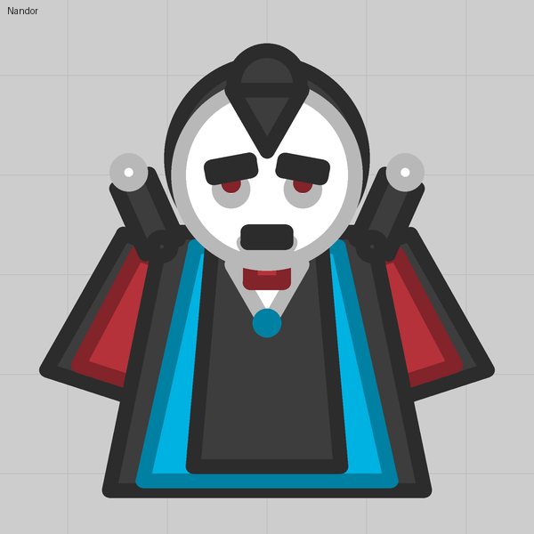

Lesson 08
Jaws that bite
Two cursor pivots resting apart swing together when you hold fire, and invisible barrels along the jaws hurt whatever is caught between them.
What you see
A mouth that hangs open, snaps shut while you hold fire, and bites what is inside it.
The trick
Two of lesson 07's pivots, one each side of the aim, resting at Facing ±45 so the mouth is open. Hold fire and each pivot turns toward the cursor from its own spot, so both bars swing inward and meet. Release and they fall open again.
The bite is three invisible barrels along the inside of each jaw that fire a stationary, short-lived bullet with Always fire on: a damage point that hurts anything touching it. Whatever sits between the closed jaws takes six bites a second.
Numbers that matter
| Field | Value | Notes |
|---|---|---|
| Facing | ±45 | How wide the mouth hangs open |
| Arc | 60 | Must be at least the rest angle, or the jaws can never meet (30 left a test stuck 15° open) |
| Bite points | 3 per jaw | Along the inside edge; each is a firing barrel against the budget |
| Bite Lifetime | 0.2 s | Short, so the points do not pile up |
| Penetration | 20 | Keeps the bite alive through a hit so it keeps biting |
Gotchas
- Six always-firing bite points are a noticeable slice of the lobby's 120-a-second budget; lesson 15 shows how to see the number before importing.
- The jaws are a picture: only the bite points do damage. Teeth that are parts do not hurt (unless you tick Collidable, lesson 12).
- Both pivots count toward the eight auto turrets, with the eyes that is four.
Where we used it
